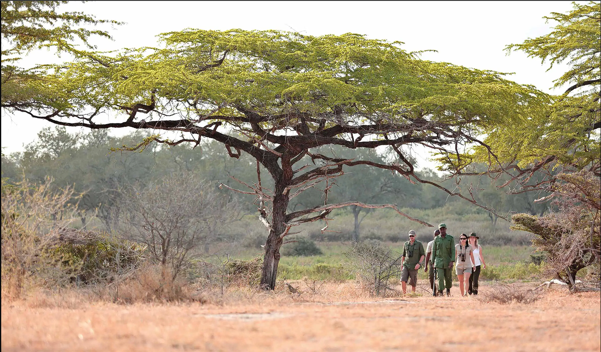
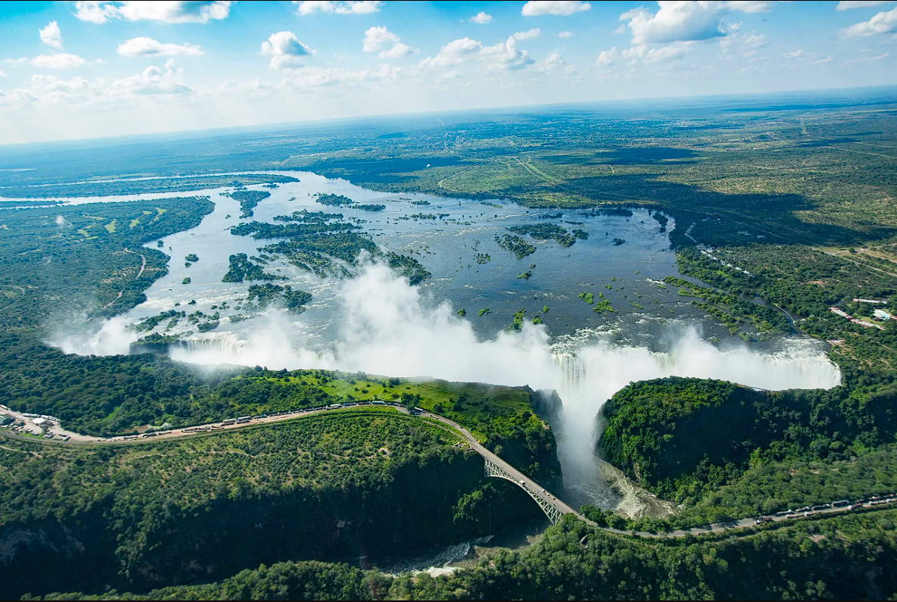
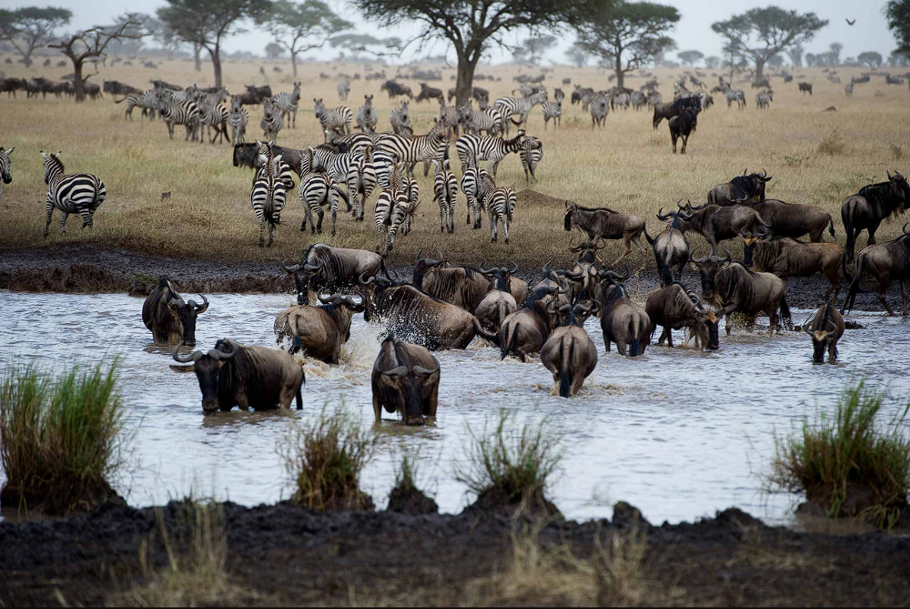

África es uno de los continentes más fascinantes del mundo, pero descubrir lo que se esconde bajo su superficie puede ser un desafío incluso para los viajeros más experimentados. En Enkosi Africa nos especializamos en ayudar a los aventureros a emprender experiencias únicas e inolvidables, yendo más allá del turismo convencional para crear recuerdos duraderos en lugar de simplemente tachar elementos de una lista. Explora las maravillas ocultas de África con nosotros.

Gorilas y la Tierra de las Mil Colinas
Gorilas, chimpances, leones y elefantes en bosques, volcanes y sabanas, la experiencia de safari más completa de África.

Safari Remoto en Tanzania
Un safari clásico en África del Este que muestra la Gran Migración, el cráter del Ngorongoro y Selous, el parque más grande de África, con viajes de una experiencia de vida salvaje aislada y lejos de multitudes.

Hacia Rutas Salvajes
En las zonas más remotas de Botswana encontrarás las maravillas que hace más de un siglo atrajeron a aventureros y exploradores al continente africano.

East Africa & Animales Salvajes
Una experiencia exclusiva en las reservas más famosas del este de África, ¡incluida la migración de animales junto al territorio que recorren
Un safari con Simbel Travels incluye lo siguiente (aunque los detalles exactos varían, ya que cada viaje está completamente hecho a medida) :